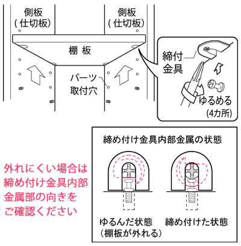

- TOP
- よくあるご質問
faqce-fit（セフィット）シリーズに関するQ＆A
「可動間仕切収納」「スタイルシェルフ」「空間活用収納」「人工大理石カウンター」からなるce-fit（セフィット）シリーズは、アクシス株式会社のオーダーメイドファニチャーです。
こちらでは、Q＆Aコーナーとしてce-fit（セフィット）シリーズに関するよくある質問と答えをまとめました。
ce-fit（セフィット）について
ce-fit（セフィット）シリーズについて
- ce-fit（セフィット）シリーズとは？
- アクシス株式会社が製造・販売するオリジナル住宅内装材ブランドの総称です。「可動間仕切収納」「スタイルシェルフ」「空間活用収納」「人工大理石カウンター」などの各アイテムがあり、すべてお部屋にぴったり合うようミリ単位で採寸、制作するオーダーメイドシステムを採用しています。
- セフィットの名前の由来は？
- フランス語の「ce」と英語の「fit」からなる造語です。「お客様の暮らしや住まいにぴったり調和する」という、ものづくりのコンセプトを表しています。
ce-fit（セフィット）のサービスについて
- 一般ユーザーですが直接注文できる？
- ce-fit（セフィット）シリーズは、お部屋にぴったり合うようミリ単位で採寸するオーダーメイドスタイルを採用しています。設置場所について設置場所情報をうかがい、配置上の注意点などを正しくお伝えするために、施工を行う専門業者様との直接取引を基本とさせていただいておりますことをあらかじめご理解ください。
- 収納のプランニングとお見積もりサービスとは？
- 平面図とラフスケッチ、収納したいものや用途をお知らせいただくことで、プランニングとお見積もりを承る業者様向けのサービスでお見積もりは無料です。なお、一般のお客様は工務店様、ハウスメーカー様、リフォーム業者様にご相談ください。
- 採寸・施工サービスとは？
- 弊社が採寸から施工までを承る有償サービスです。なお、当サービスは一般のお客様、業者様どちらからでもご依頼いただけます。
- 永久メンテナンスサービスとは？
製品の修理やパーツ交換は、ご購入後も無期限で承ります。ご注文邸名と商品をひも付けして受注データとして永久保存しているからこそ可能な弊社オリジナルのサービスです。
※メーカー廃盤などにより同等品となる場合があります。
※使用年数などにより交換パーツとの色違いなどが生じる場合があります。
ce-fit（セフィット）の製品について
- 生産地は？
- 兵庫県丹波篠山市のオーリスグループ生産工場で製造しています。一部材料や金物部品を除き、材料調達から製造まで国内にこだわっています。
- ce-fit（セフィット）シリーズはどこで購入できる？
- 一般のお客様は、住宅の新築・リフォーム依頼先の業者様に採用したい旨お伝えください。ce-fit（セフィット）製品だけを取り付けたいけれど依頼先がない場合は、お問い合わせください。なお、業者様は、弊社まで直接ご依頼・ご相談ください。また、 ce-fit（セフィット）は設置場所周辺の確認が必要であり、またオーダーメイドする製品が多いことから、確認漏れ防止のため問屋様・商社様とは基本的にお取引を控えさえていただいています。あらかめご了承ください。
- ショウルームは？
- 東京と大阪にございます。現地では「可動間仕切収納」を実際に動かし、機能を確認いただけます。またこちらではプラン相談も承っておりますので、ご希望の場合は平面図をお持ちください。
- シックハウス対策は行っている？
- ce-fit（セフィット）シリーズの各製品ではホルムアルデヒド蒸散量がもっとも少ない「F☆☆☆☆グレード」の材料を使用しているので安心。さらに、シックハウス症の主な原因物質として新たに規制対象となった特定揮発性有機化合物＝4VOC（トルエン・キシレン・エチルベンゼン・スチレン）についても業界自主基準値に適合しています 。
お届けについて
- 運送会社は選べる？
- 弊社指定業者となるため選ぶことはできません。なお、弊社製品はトールエクスプレスジャパン路線便でお届けします。ただし、追加パーツをご購入された場合は佐川急便をお選びいただけます。その場合、お支払いはe-コレクトによる代引となります。
- 配送日時の指定はできる？
最短納入可能日以降の平日（日曜・祝日以外）でご指定いただけます。なお配送時間はご指定いただけません。
※時刻を指定する場合は、チャーター便（有料）でのお届けとなります。チャーター料金は地域により異なります。
※地域により、昼前/午後の指定が可能な場合があります。
※配送1時間前に、配送業者より荷受人様にお電話を差し上げております。
※弊社営業日の場合は当日の朝、配送予定時刻をお調べすることが可能です。
※最短納入可能日の目安
製品 最短出荷可能日 可動間仕切収納 10営業日目 スタイルシェルフ 10営業日目 ※最短出荷可能日＋2～4日（地域により異なります。詳しくはお問い合わせください）
- 荷物は設置する部屋まで運んでもらえる？
- できません。配送は路線便業者に委託していますので、戸建住宅の場合は玄関先までのお届け、集合住宅の場合は1階入口での軒先手渡しとなります。
- 留守中に玄関のカギを開けて荷物を置いていってもらえる？
- できかねます。事故防止のため、必ずお客様に荷受けしていただいています。
- 送料は？
- ご注文合計金額が20,000円（税抜）以上の場合は送料・代引手数料ともサービスとなりますが、20,000円（税抜）未満の場合1注文ごとに配送料として600円（税抜）を申し受けます。
なお、佐川急便e-コレクトをご利用の場合は、別途代引手数料が300円（税抜）必要となります。
組立・取付について
- 組立・取付は？
- 下記に掲載した各製品のQ＆Aを参照ください。
保証・アフターサービス・メンテナンス
- 商品の保証期間は？
- 出荷日より2年間です。ただし、機能パーツ・電機部品については仕入先メーカー保証の1年間となります。
可動間仕切収納
移動と設置について
- 収納物を載せたまま移動できる？
- できません。キャスターによる床板の傷防止のため、収納物をいったん本体の外に出してから本体を移動させてください。
- 別の部屋に移動できますか？
- できかねます。天井高さに合わせて製作しますので、ドアを通りません。
- ドアとドアの間隔が狭くても設置できる？
- 袖壁（建築壁）を設けるか、オプションの袖壁パネルを利用することで部屋を分けることが可能です。なお、詳細は可動間仕切収納の商品カタログを参照ください。カタログはこちらからご請求いただけます。
- 勾配天井・折上天井で使用できる？ また、天井に突っ張らずに設置できる？
- 本製品は、本体を床に直置きし、天井に突っ張って固定する仕様になっているためできません。背の高いキャビネットだけに天井に固定していないと安定しません。
- 天井に補強は必要？
- 不要です。本体天面に特殊なスポンジ状の天井スペーサー（軟質材）が付いており、天井を傷付けません。なお、詳細は可動間仕切収納の商品カタログを参照ください。カタログはこちらからご請求いただけます。
- フローリングではない床仕上材でも設置できる？
- フローリングを推奨します。なお、詳細は可動間仕切収納の商品カタログを参照ください。カタログはこちらからご請求いただけます。
- 床の補強は必要？
- 床仕上材の種類、強度については、可動間仕切収納の商品カタログを参照ください。カタログはこちらからご請求いただけます。
- 1室を2室に完全に間仕切りするには？
- サイドスペーサーを取り付けて定規代わりにし、壁際に設置する1台目の位置を決めると容易に連結できます。この場合、サイドスペーサーを外し、壁と反対側の側板を押して本体を壁側に1～1.5mm程度動かし、隙間を小さくします。次に1台目をジャッキアップして完全に固定します。 1台目の横に2台目を配置し、となり合った側板同士の前面をぴったり揃えます。なお3台以上連結される場合はお問い合わせください。
納まりについて
- 建築側の仕上寸法が製品注文寸法と違った場合、調整は可能？
- 可能です。標準装備スペーサーの施工誤差吸収可能範囲は下記を参照ください。
【天井高さ = ±5mm】
【設置場所間口寸法 = +3mm/-5mm】
- サイドスペーサーを波打ちなくきれいに納めるには？
- サイドスペーサーの壁際側で先端部分を少し奥に押し込み気味で取り付けます。次にサイドスペーサーの受けに差し込まれている足がある根元側を上から下まで順に押していきます。これにより先端部分が反動で前に出て、まっすぐ納まります。
- 光漏れや音漏れは大丈夫？
お客様だけで移動、設置できる製品のため、光漏れ・音漏れを完全に防ぐことはできません。たとえば、ドアや間仕切戸と比べると遮音性ではやや劣ります。
また下記のケースでは光漏れが生じることがあります。
- ユニット同士が連結されていない場合
- サイドスペーサーが正しく装着されておらず壁との間に隙間がある場合
- 天井スペーサーが正しく取り付けられていない場合
- 天井にしっかり突っ張っていない場合
※袖壁納め、袖壁パネル納めの場合、特に注意が必要です
- 本体と壁、天井との納まりは問題ない？
- スポンジ状の軟質材でほぼ隙間なく納めることができるのでご安心ください。なお、サイドスペーサーは造作材の形に合わせハサミでカットできます。
製品について
- 地震で倒れませんか？
- ce-fit 天井に対して突っ張って固定するため､地震の揺れによる転倒の心配はありません。なお、本製品には震度5弱以上の揺れを感知して扉の開閉を自動的にロックする「センサー式耐震ロック」が標準装備されています。
- 棚板の耐荷重は？
- 1枚あたり約20kgです。ただし、収納本体と収納物最大重量の合計は300kgが上限です。床の耐荷重を超えないようご確認ください。
- 扉は不要ですがどうすれば？
- 本体注文時に扉を付けずにお届けする「マイナスオプションA <扉>」をお選びください。
- ハンガーパイプは不要ですがどうすれば？
- 本体注文時にハンガーパイプを付けずにお届けする「マイナスオプションC <ハンガーパイプ>」をお選びください。
- 扉を取手なしにできる？
- できかねます。
- 扉に鏡を付けることはできる？
- できかねます。移動の際の安全確保を優先しています。
- 側面を扉と同色に化粧できる？
- 可能です。本体カラーオプション（有償）をお選びください。
- 扉の内部色は特注できる？
- 対応していません。扉・FIXパネルの色柄特注については対応が可能です。ご相談ください。
- 奥行の特注はできる？
- できかねます。奥行は全タイプ一律です。ユニット全体を昇降させる機構を備えているため、浅い奥行や深い奥行の対応ができません。
お届け・組立について
- 採寸・施工サービスはある？
首都圏・京阪神などのエリアに限り有料で承ります。なお対応エリアの詳細については お問い合わせください。
※通常、組立はご注文いただいた業者様の手配となります。
- 一般のユーザーでも組立は可能？
- できかねます。施工業者様にご依頼ください。
- 送料は別途かかる？
- 本体価格に含まれています。ただし、カスタムパーツ・交換用パーツ単品の追加注文の際は、ご注文合計金額20,000円（税抜）未満の場合1注文ごとに配送料として600円（税抜）を頂戴しています。
- 施工時にゴミは出る？
- 輸送中における傷・破損防止のため、木部材は段ボールで梱包してお届けします。梱包材は施工業者様に処分していただいてください。
- 施工時に部屋がホコリで汚れない？
- すべての木部材はあらかじめ正寸にカットした状態でお届けするため、現地で切る、削るといった作業は一切生じません。したがって、大量の木くずなどでお部屋が汚れる心配は不要です。ただし、段ボールなどからは細かいホコリが落ちることがあります。念のため、シートなどで養生した上で作業を進めるようにしてください。
- 施工に要する時間と人工（にんく）はどれくらい？
-
1台あたりの組立時間の目安（初めての場合）は下記の通りです。なお、作業前には段取りのための時間がある程度必要となります。
【スタンダードタイプ・梁欠きタイプ】
- 2枚扉・ダブルシェルフ: 1時間～1時間半
- 3枚扉・4枚扉: 時間半～2時間
【LDKタイプ】
- LD-BOX: 1時間半～2時間
- TV-BOX: 2時間～3時間
なお、本製品は立てたまま組み上げるノックダウン製品のため、部材を支える人と組み立てる人の計2人工が必要です。
- 配送日と配送時間の指定はできる？
ご相談ください。なお、最短配送可能日以降の平日（月～土）で希望配送日の指定が可能です。ただし、配送時間の指定はできませんので、あらかじめご了承ください。
※チャーター便指定や時間指定の場合、別途追加料金が必要となります。
※地域により、昼前/午後の指定が可能な場合があります。
※配送1時間前に、配送業者より荷受人様にお電話を差し上げております。
※弊社営業日であれば当日の朝、配送予定時刻をお調べすることが可能です。
※ご希望の際はお問い合わせください。
- 荷物は設置する部屋まで運んでもらえる？
- できません。戸建住宅の場合は玄関先、集合住宅の場合は1階入口での軒先手渡しとなります。
- どんな荷姿で届く？
- 長尺の段ボール梱包でお届けします。なお、約500mm幅と天井高さに近い長尺部材がありますので、事前に搬入路をご確認ください。
ご注文について
- 納期はどのくらい？
- ご注文確定後、最短で8営業日目に出荷いたします。ただし、お届けするエリアにより配送日数が異なります。詳細はお問い合わせください。
- 採寸箇所と採寸方法は？
- 間仕切りする場所の「①床面-天井面」「②壁内-内寸法」をスケールまたはレーザー距離計などで採寸します。なお、弊社では、採寸箇所と採寸した寸法が記録できる「採寸シート」をご用意しております。ご入り用の場合はその旨をお申し出ください。
- 注文時期はいつが適切？
- 可動間仕切収納の設置予定場所の床・壁・天井が仕上がった後、採寸した上でご注文ください。
- 見積もり依頼方法は？
- 専用のオーダーフォームに必要事項を記入し、FAXでご依頼ください。オーダーフォームはこちらからダウンロードいただけます。なお、FAXでもオーダーフォームをお送りいたしますのでご希望の場合はお電話でご連絡ください。
- 注文方法は？
一般のお客様と業者様ではご注文方法が異なります。
【一般のお客様】
新築・リフォームをご依頼されている工務店様、ハウスメーカー様、リフォーム業者様などへご相談ください。なお、採寸・施工サービスをご利用の場合、直接アクシスにご相談いただけます。【業者様の場合】
まずアクシスにお見積もりをご依頼いただき、問題がなければ正式にご発注をお願いいたします。なお弊社では、本製品を日本全国どこでも路線便で現場までお届けしています。※現場ごとに寸法が異なる商品ですので、通常建材店様・問屋様からのご注文はいただいておりません。
- 施工業者を紹介してもらえる？
- 首都圏・京阪神などのエリアであれば、アクシスの採寸・施工サービスをご利用いただけます。その他のエリアについてはお問い合わせください。
- 価格を知るには？
下記の通りです。
【一般のお客様】
施工を依頼する業者様にご相談いただければ、商品と施工代を含めたお見積もりがわかります。なお、採寸・施工サービスをご利用の場合、直接アクシスにご相談ください。【業者様の場合】
直接アクシスにお見積もりをご依頼ください。なお、価格についてはこちらをご覧ください。
- 一般ユーザーから直接注文はできる？
- できません。事前に住宅の構造や仕様が商品の特性に適しているかどうかを確認し、正確に採寸する必要があるからです。こうした理由からご注文は専門業者様からのみとさせていただきます。ただし、アクシスの採寸・施工サービスについては、お客様からのご注文を承ります。
アフターサービス・その他
- 棚板が外れなくなった。どうすれば？
締め付け金具が正しく緩んでいるかどうかをご確認ください。棚板裏面の締め付け金具で、側板に取り付けた連結シャフトの頭部を締め付けて固定しているため、プラスドライバーで締め付け金具を緩めることで、棚板を移動することができます。なお、締め付け金具は内部に円盤状の樹脂が入っており、締め付けを緩めると、シャフトが出入りするU字部の開口部と円盤の切り欠きが平行になります。この状態であれば問題なく外れるはずです。
※外れにくい場合は、締め付け金具内部金属円盤の向きをご確認ください。
詳しくはこちら
- 商品の保証期間は？
- 出荷日より2年間です。保証期間中は規定により無償修理いたします。
- 部品や部材をなくしてしまったら？
- まず施工業者様にご相談ください。なお、お困りの場合は弊社まで直接お問い合わせください。
- 使い方、移動の仕方がわからない。どうすれば？
- 製品や操作についてご不明な点がございましたら弊社までおたずねください。
- 追加パーツの注文方法は？
- 製品に付属の追加パーツ注文書に必要事項を記入しFAXでご注文ください。また、電話・E-mailでもご注文が可能です。なお、ご連絡いただく際には手元に「インフォメーションシート」「追加パーツ注文書」｢ジャッキアップハンドルのフタ」などをご用意いただき、記載の「邸ID」「注文ID」をお知らせいただくとスムーズです。
スタイルシェルフ
設置について
- 自立させることはできる？
- 壁面への設置が必要です。側板と天板の基本構成ですので、必ず壁面と床へビスで固定してください。
- L型設置には必ず、コーナータイプが必要？ コーナータイプなしにL型設置はできる？
- 可能です。デッドスペースをなくすためにもコーナー棚の使用をおすすめします。
- フロート設置はできる？
- 基本構成上、フロート設置はできません。
- 横方向に収納を追加することができる？
- できます。スタイルシェルフは横方向の連結数に制限がありません。一部の収納パーツは幅寸法が固定ですが、棚板・ハンガーパイプ・引き出しは、ミリ単位でオーダーできます。また、高さ違いでの連結も可能です。階段下や勾配天井などの一部天井が低くなっている場所でもご使用いただけます。
- 奥行の異なるユニット同士を連結できる？
- 連結できません。ただ横に並べて設置することはケースにより可能です。ご相談ください。
- コに字型に設置できる？
- L型とI型を組み合わせることで可能です。ただし、この場合、コーナー棚を両脇に設置できません。
- ウォークインクローゼットとして対面で設置した場合、最小どれくらいの寸法が必要？
- 最小800mmの有効寸法を確保してください。1人が立って入れるスペースです。クローゼット内での作業スペースが多く必要な場合は、寸法をさらに広く取るようにしてください。また、引き出しを全開にして、出し入れできる分のスペースを確保してください。
製品について
- 壁納めでない側板外面にはシステム穴はない？
- ありません。なお、側面は化粧仕上げですのでサイドフィラーを取り付けずにオープン設置が可能です（側面壁不要）。
- 現場で自由にカットできる？
- できかねます。ただ、幅寸法はミリ単位で、高さ寸法は（標準：2,080mm）は、32mmの倍数単位でオーダーが可能です。これにより現場でのカットが不要となり短い時間で取り付けられます。
- コンセント穴はあけられる？
- 強度の関係、構造上の問題から加工できません。
- 鏡を取り付けることはできる？
- 専用のオプションパーツで、開閉タイプの鏡ユニット（W450mm）をご用意しています（H2800mm用のみ）のでこちらをご利用いただけます。なお、奥行によっては、ネクタイ掛けなどのパーツや収納物が干渉する場合があります。
- 照明を取り付けることはできる？
- 照明に関連したオプションパーツはございません。また市販のハロゲンランプは周囲が高温になるため収納物が焦げる、発火するなど恐れがありますので使用を避けてください。
- 各部の耐荷重は？
下記の通りです。
- 可動棚（t20:10kg/t30:～W625:45kg/～W765:30kg/～W975:20kg）
- ハンガーパイプ（45kg）
- 固定棚（～W625:45kg/～W765:30kg/～W975:20kg）
- スライドシャツ棚（10kg/枚）
- 桐和盆（5kg/盃）
- パンツハンガー（10kg/枚）
- 引き出し（10kg/盃）
- 網かご（5kg）
- コンテナトレイ（2kg/盃）
- 仮掛けフック（4.5kg/個）
- お手入れ方法は？
- やわらかい布に中性洗剤を含ませ軽く拭いた後で、仕上げに乾いた布でから拭きしてください。
- 奥行はオーダーできる？
- できかねます。391mmと491mmの2種類からお選びください。なお、奥行によってはパーツや収納物が仕切板・側板より飛び出す場合があります。通路幅や建具位置をご確認ください。
お届け・組立について
- どんな荷姿で届く？
- 長尺の段ボール梱包でお届けします。なお、約500mm幅と天井高さに近い長尺部材がありますので、事前に搬入路をご確認ください。
- 荷物は設置する部屋まで運んでもらえる？
- できかねます。戸建住宅の場合は玄関先、集合住宅の場合は1階入口での軒先手渡しとなります。
- 配送日と配送時間の指定はできる？
ご相談ください。最短配送可能日以降の平日（月～土）で希望配送日の指定が可能です。ただし、配送時間の指定はできませんのであらかじめご了承ください。
※チャーター便指定や時間指定の場合、別途追加料金が必要となります。
※地域により、昼前/午後の指定が可能な場合があります。
※配送1時間前に、配送業者より荷受人様にお電話を差し上げております。
※弊社営業日であれば当日の朝、配送予定時刻をお調べすることが可能です。
※ご希望の際はお問い合わせください。
- 荷物は設置する部屋まで運んでもらえる？
- 戸建住宅の場合は玄関先、集合住宅の場合は1階入口での軒先手渡しとなります。
- 送料は？
- ご注文合計金額が20,000円（税抜）以上の場合は送料・代引手数料ともサービスとなりますが、20,000円（税抜）未満の場合1注文ごとに配送料として600円（税抜）を申し受けます。なお、佐川急便e-コレクトをご利用の場合は別途代引手数料が300円（税抜）必要です。
- 一般のユーザーでも組立は可能？
- できかねます。施工業者様にご依頼ください。
- 採寸・施工サービスはある？
首都圏・京阪神などのエリアに限り有料で承ります。なお対応エリアの詳細については お問い合わせください。
※通常、組立はご注文いただいた業者様の手配となります。
ご注文について
- 施工業者を紹介してもらえる？
- 首都圏・京阪神などのエリアであれば、アクシスの採寸・施工サービスをご利用いただけます。その他のエリアについてはお問い合わせください。
- 一般ユーザーから直接注文はできる？
- できかねます。事前に住宅の構造や仕様が商品の特性に適しているかどうかを確認し、正確に採寸する必要があるからです。こうした理由からご注文は専門業者様からのみとさせていただきます。ただし、アクシスの採寸・施工サービスについてはお客様からのご注文を承ります。
- 価格を知るには？
下記の通りです。
【一般のお客様】
施工を依頼する業者様にご相談いただければ、商品と施工代を含めたお見積もりがわかります。なお、採寸・施工サービスをご利用の場合、直接アクシスにご相談ください。【業者様の場合】
直接アクシスにお見積もりをご依頼ください。なお、価格についてはこちらをご覧ください。
- 注文方法は？
一般のお客様と業者様ではご注文方法が異なります。
【一般のお客様】
新築・リフォームをご依頼されている工務店様、ハウスメーカー様、リフォーム業者様などへご相談ください。なお、採寸・施工サービスをご利用の場合、直接アクシスにご相談いただけます。【業者様の場合】
まず、アクシスにお見積もりをご依頼いただき、問題がなければ正式にご発注をお願いいたします。なお、弊社では、本製品を日本全国どこでも路線便で現場までお届けしています。※現場ごとに寸法が異なる商品ですので、通常建材店様・問屋様からのご注文はいただいておりません。
- 見積もり依頼方法は？
- 専用のオーダーフォームに必要事項を記入し、FAXでご依頼ください。オーダーフォームはこちらからダウンロードいただけます。なお、FAXでもオーダーフォームをお送りいたしますのでご希望の場合はお電話でご連絡ください。
- 注文時期はいつが適切？
- 可動間仕切収納の設置予定場所の床・壁・天井が仕上がった後、採寸した上でご注文ください。
- 採寸箇所と採寸方法は？
- 間仕切りする場所の「①床面-天井面」「②壁内-内寸法」をスケールまたはレーザー距離計などで採寸します。なお、弊社では、採寸箇所と採寸した寸法が記録できる「採寸シート」をご用意しております。ご入り用の場合はその旨お申し出ください。
- 納期はどのくらい？
- ご注文確定後、最短で14営業日目に出荷いたします。ただし、お届けするエリアにより配送日数が異なります。詳細はお問い合わせください。
- 商品の現物を見ることはできる？
- 東京と大阪のショウルームにてご覧いただけます。なお、ご来場の際はご予約ください。なお、ショウルームについてはこちらをご覧ください
- 追加パーツの注文方法は？
製品に付属の追加パーツ注文書に必要事項を記入しFAXでご注文ください。また、電話・E-mailでもご注文が可能です。なお、ご連絡いただく際には手元に「インフォメーションシート」「追加パーツ注文書」｢ジャッキアップハンドルのフタ」などをご用意いただき、記載の「邸ID」「注文ID」をお知らせいただくとスムーズです。
※追加パーツのご注文は、施主様・業者様のどちらからも承ります。
※「インフォメーションシート」は取扱説明書に同梱されています。
- 引き出しに仕切りを付けられる？
- 仕切付の引き出しがございます。なお、仕切りは移動できません。
- コーナー用可動棚は1枚ずつでも注文できる？
- 追加時のみ1枚単位で注文できます。ただし、新設時は4枚セットのみとなります。
- 側板にフックなどをビスで取り付けられる？
- できかねます。
- 引き出しに引き手を付けられる？
- 引き手のご用意はございません。
- 部品や部材をなくしてしまったら？
- まずは工務店様、施工店様へご相談ください。お困りの場合は弊社までお問い合わせください。
アフターサービス・その他
- 保証書はある？
- 製品に同梱しています。
- 商品の保証期間は？
- 出荷日より2年間です。保証期間中は規定により無料で修理いたします。詳しくは 取扱説明書「保証規定」をご覧ください。
空間活用収納シリーズ
ご注文について
- 一般ユーザーから直接注文はできる？
- できかねます。専門業者による施工が必要な製品です。
- 価格を知るには？
下記の通りです。
【一般のお客様】
施工を依頼する業者様にご相談いただければ、商品と施工代を含めたお見積もりがわかります。【業者様の場合】
直接アクシスにお見積もりをご依頼ください。
- 施工業者を紹介してもらえる？
- お問い合わせください。
- 注文方法は？
一般のお客様と業者様ではご注文方法が異なります。
【一般のお客様】
新築・リフォームをご依頼されている工務店様、ハウスメーカー様、リフォーム業者様などへご相談ください。【業者様の場合】
まず、アクシスにお見積もりをご依頼ください。なお、弊社では、本製品を日本全国どこでも路線便で現場までお届けしています。
- 見積もり依頼方法は？
- 専用のオーダーフォームに必要事項を記入し、FAXでご依頼ください。オーダーフォームはこちらからダウンロードいただけます。なお、FAXでもオーダーフォームをお送りいたしますのでご希望の場合はお電話でご連絡ください。
- 注文時期はいつが適切？
- 内装工事がスタートしたらご注文ください。空間活用収納は壁工事の際に施工する製品です。
- 納期はどのくらい？
- ご注文確定後、最短で10営業日目に出荷いたします。ただし、お届けするエリアにより配送日数が異なります。詳細はお問い合わせください。
お届け・施工について
- どんな荷姿で届く？
- 段ボール梱包でお届けします。
- 荷物は設置する部屋まで運んでもらえる？
- 戸建住宅の場合は玄関先、集合住宅の場合は1階入口での軒先手渡しとなります。
- 採寸・施工サービスはある？
首都圏・京阪神などのエリアに限り有料で承ります。なお対応エリアの詳細については お問い合わせください。
※通常、組立はご注文いただいた業者様の手配となります。
※壁工事を伴うため設置できない場合があります。詳しくはお問い合わせください。
- 配送日と配送時間の指定はできる？
ご相談ください。なお、最短配送可能日以降の平日（月～土）で希望配送日の指定が可能です。ただし、配送時間の指定はできませんので、あらかじめご了承ください。
※チャーター便指定や時間指定の場合、別途追加料金が必要となります。
※地域により、昼前/午後の指定が可能な場合があります。
※配送1時間前に、配送業者より荷受人様にお電話を差し上げております。
※弊社営業日であれば当日の朝、配送予定時刻をお調べすることが可能です。
※ご希望の際はお問い合わせください。
- 現場加工はできる？
- トイレカウンターユニットと、両壁吊戸収納は、現場でサイズ調整していただけます。
埋込収納は、収納本体のサイズに合わせて、壁内埋込施工になります。
- 施工時にゴミは出る？
- 輸送中における損傷・破損防止のため、木部材は段ボールで梱包してお届けします。梱包材は施工業者様に処分をお願いしてください。
- 送料は別途かかる？
- 本体価格に含まれています。ただし、カスタムパーツ・交換用パーツ単品の追加注文の際は、ご注文合計金額20,000円（税抜）未満の場合1注文ごとに配送料として600円（税抜）を頂戴しています。
施工時期・納まりについて
- 施工はどの時点で？
- 壁工事の際に施工します。なお、取付には指定位置に壁下地が必要となります。
- 納まりはどうなっている？
下記の通りです
- トイレカウンターユニット:有効壁内寸760～917mm（※）／左右クリアランス2mm
- 両壁吊戸収納: 有効壁内寸は760～921mm（※）／オープン部側クリアランス2mm
- 埋込収納: 幅高さ共に収納本体＋2mmのクリアランスが必要
※トイレカウンターユニット、両壁吊戸収納の幅寸法は、現場カットになります。
仕様について
- トイレカウンターユニットのサイドキャビネットを左右反転して設置できる？
- できません。右置き・右吊元のみです。
- 両壁吊戸収納は左右反転できる？
- 可能です。現場でお選びください。
- 埋込収納（扉付き）は扉の開き勝手を変更できる？
- 可能です。現場でお選びください。
人工大理石
ご注文について
- 一般ユーザーから直接注文はできる？
- できません。正しい注文寸法をお知らせいただく必要があるため、ご注文は専門業者様からのみとさせていただきます。ただし、アクシス施工請負サービスについてはお客様からのご注文を承ります。
- 価格を知るには？
下記の通りです。
【一般のお客様】
施工を依頼する業者様にご相談いただければ、商品と施工代を含めたお見積もりがわかります。【業者様の場合】
直接アクシスにお見積もりをご依頼ください。
- 注文方法は？
一般のお客様と業者様ではご注文方法が異なります。
【一般のお客様】
新築・リフォームをご依頼されている工務店様、ハウスメーカー様、リフォーム業者様などへご相談ください。【業者様の場合】
まず、アクシスにお見積もりをご依頼ください。なお弊社では、本製品を日本全国どこでも路線便で現場までお届けしています。※現場ごとに寸法が異なる商品ですので、通常建材店様・問屋様からのご注文はいただいておりません。
- 見積もり依頼方法は？
- 専用のオーダーフォームに必要事項を記入し、FAXでご依頼ください。オーダーフォームはこちらからダウンロードいただけます。なお、FAXでもオーダーフォームをお送りいたしますのでご希望の場合はお電話でご連絡ください。
- 納期はどのくらい？
- ご注文確定後、最短で10営業日目に出荷いたします。ただし、お届けするエリアにより配送日数が異なります。詳細はお問い合わせください。
- 特注はできる？
- はい。ぜひ、ご相談ください。
お届け・施工について
- どんな荷姿で届く？
- 段ボール梱包です。長尺物になりますので搬入路をご確認ください。
- 荷物は設置する部屋まで運んでもらえる？
- 戸建住宅の場合は玄関先、集合住宅の場合は1階入口での軒先手渡しとなります。
- 採寸・施工サービスはある？
首都圏・京阪神などのエリアに限り有料で承ります。なお対応エリアの詳細については お問い合わせください。
※通常、組立はご注文いただいた業者様の手配となります。
- 配送日と配送時間の指定はできる？
ご相談ください。なお、最短配送可能日以降の平日（月～土）で希望配送日の指定が可能です。ただし、配送時間の指定はできませんので、あらかじめご了承ください。
※チャーター便指定や時間指定の場合、別途追加料金が必要となります。
※地域により、昼前/午後の指定が可能な場合があります。
※配送1時間前に、配送業者より荷受人様にお電話を差し上げております。
※弊社営業日であれば当日の朝、配送予定時刻をお調べすることが可能です。
※ご希望の際はお問い合わせください。
- 現場加工はできる？
- 可能です。木工用の工具をご用意ください。
- 施工時に部屋がホコリで汚れない？
- すべての部材はあらかじめ正寸にカットした状態でお届けするため、現地で切る、削るといった作業は一切生じません。したがって、人工大理石の削りクズが出る心配はほとんどありません。ただし、段ボールなどから細かいホコリなどが落ちることはあります。念のため、シートなどで養生した上で作業を進めるようにしてください。
- 施工時にゴミは出る？
- 輸送中における傷・破損防止のため、木部材は段ボールで梱包してお届けします。梱包材は施工業者様に処分していただいてください。
納まりについて
- 納まりはどうなっている？
- 既存製品との間は、前後左右に2mm、上に1mmのクリアランスを設けています。また、壁との間にはコーキングを打ち隙間を埋めます。なお、コーキングは、家の伸縮目地の役目をします。
- 建築側の仕上がり寸法が製品注文寸法と違った場合、調整は可能？
- 程度によりますが少しであれば可能です。なお寸法差が大きい場合は木工用の工具で、削ることで調整していただけます。寸法差が小さい場合はコーキングで埋めてください。
メンテナンスについて
- 汚れは家庭でも落とせる？
- はい、落とせます。中まで均質なソリッド材のため、調味料の汚れや水アカなどが付きにくく、仮に汚れてしまっても簡単に拭き取ることができます。
- お手入れ方法は？
- 基本は水拭きですが、キッチン用洗剤もご利用いただけます。なお、しつこい汚れは、クリームクレンザー＋スポンジまたはスコッチ・ブライト™スポンジたわし（研磨粒子付）などで簡単にメンテナンスできます。
人工大理石について
- 人工大理石とは？
- 樹脂と無機物からなる人工の大理石です。原料となる樹脂の種類によって、ポリエステル系とアクリル系の人工大理石がありますが、アクシスではアクリル系の中でも「メタクリル樹脂」と呼ばれる、きわめて優れた特性を持つ樹脂を100%使用しています。天然大理石によく似た風合いを持ちながら、天然石にはない均質性と高い強度を誇ります。
- 人工大理石と天然大理石の違いは？
- 天然大理石は多彩な色柄模様の美しさが特徴ですが、衝撃などで割れやすく、また湿気や水を吸ってシミになりやすい傾向があります。その点、人工大理石は、耐衝撃性や対候性、耐水性、耐薬品性、施工性などあらゆる面で天然大理石にない優れた特性を持っています。
- 人工大理石と木製のカウンターの違いは？
- 木製カウンターは加工がしやすく安価です。人工大理石カウンターは木製よりも高価ですが、メンテナンス性（お手入れのしやすさ）や耐久性に優れ、その美しさが持続します。
- どの程度、長持ちする？
- 日々のお手入れ次第で半永久的にお使いになれます。
- ホルムアルデヒドの発散等級は？
- F☆☆☆☆基準を満たした材料を使用しています。詳しくはお問い合わせください。
- 傷は付きませんか？
- 通常の使用では傷は付きません。ただし、刃物などで故意に傷を付けようとすればその痕跡は残ります。弊社が採用している人工大理石「コーリアン®」は加工性さと耐久性を兼ね備えた素材です。
- 汚れには強い？
- 試験の結果、食品、調味料、コーヒーや紅茶などの嗜好品と触れても、水拭きで簡単に汚れが落とせることが判明しています。また、1週間放置して汚れがこびりついた場合でもキッチン用洗剤やクリームクレンザーで問題なく拭き取ることができます。
- 熱には強い？
- キッチンワークトップに求められる耐熱基準は、「表面に180℃の熱い模擬鍋を20分間置いた状態でも変化が生じないこと」ですが、人工大理石「コーリアン®」はこの基準をクリアしています。弊社試験では、350℃に熱した平底鍋を5分間直置きしても損傷しませんでした。また、タバコの火でも影響がないことがわかっています。ただ、鍋底の温度が500℃近くに達するような状況では変性や損傷の可能性があります。その場合は鍋敷きを使用するようにしてください。